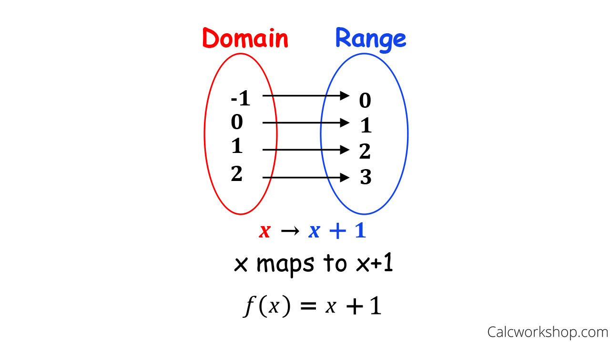

# Nehemiah ### presentes <div id="the_eye"></div> --- ## Made by $\mathscr{Fitsum}$
programming paradimes
A programming paradigm is a philosophy, style, or general approach to writing code.
Its an way in designing software systems
Basically there are two common programming paradigms
imperative
declarative
#### Imperative paradigm is way of telling the machine how to change its state *it finds a solution of a problem in a Series of steps* <br> do this then this kinda style --- ### Procedural *This paradigm structure the code into groups of procedures* --- ``` function add(x,y){ console.log(x+y); } function multiply(x,y){ console.log(x*y); } function divide(x,y){ if(y != 0) console.log(x/y); } let x = 3; let y = 8; add(x, y) multiply(x, y) divide(x, y) ``` --- ### Object oriented --- ###### Is OOP also imperative paradigm ? *oop* <br> which groups instructions with the part of the state they operate on *It encapsulates the states into objects and then it calls them in imperative way* --- ``` class Dog { name age constructor (name, age){ this.name = name; this.age = age; } stand_up(){ // ............. } sit(){ // ............. } turn_around(){ // ............. } } let my_dog = new Dog("rocky",3); my_dog.stand_up(); // do this my_dog.sit(); // then this my_dog.turn_around(); ```
### declarative paradigms is a paradigm in which the programmer merely declares properties of the desired result , but not how to compute it *Declarative programming is all about hiding away complexity and bringing programming languages closer to human language and thinking.* --- ### Functional in which the desired result is declared as the value of a series of function applications *it is derived purely from mathematics called lamda calculs* ---  --- --- ``` js function topStudents(array){ return array .map(item => item * (100/40)) .filter(item => item > 80 ); } const arr = [39, 12, 35, 26, 29]; const new_arr= topStudents(arr); // [ 97.5, 87.5 ] ``` --- ## there are also others but i didn't work with them so lets skip them
Reference
wiki
GC digital fellows